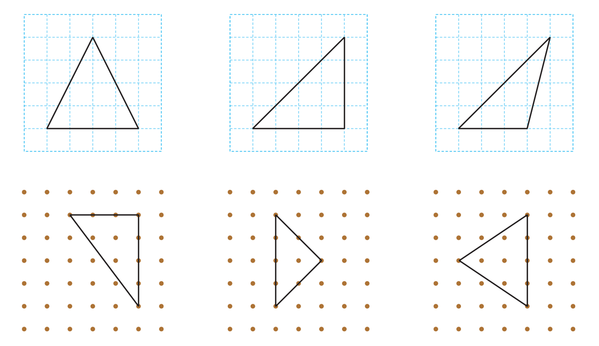

- 개념 정리
- 1
- 2
- 3
- 4
- 5
-
-
: 한 각이 직각인 삼각형직각삼각형

-
-
1 직각삼각형을 모두 찾아 표 하세요.
 -
2 도형을 보고 표를 완성해 보세요.
변의 수 꼭짓점의 수 각의 수 직각의 수 3331 -
3 직각삼각형을 완성해 보세요.
-
4 칠교판으로 만든 모양에서 크고 작은 직각삼각형이 모두 몇 개인지 써 보세요.
개3개3 -
5 다음 도형이 직각삼각형이 아닌 까닭을 써 보세요.
까닭예주어진 도형은 한 각이 직각인 삼각형이 아니기 때문입니다.